| 日付 | 2009年3月26日（木） |
|---|---|
| 山域 | 奥秩父 |
| メンバー | 単独 |
| 山行形態 | 日帰り |
| アクセス | 電車、バス |
| ルート (Map) | 相原橋→秩父槍ヶ岳→稜線下降点→1560m三角点峰往復→相原橋 |
秩父の奥深くに秩父槍ヶ岳という寂峰がある。
その微妙な山名のせいか、ほとんど登られることのないマイナーな山だ。
山渓の分県登山ガイドを読んでいたら、驚いたことにこの山が紹介されていた。
詳細な情報が入ったので、これを機に登ってみることにする。
秩父鉄道の終点・三峰口駅に到着。
ここまで来るのは四阿屋山に行ったとき以来だろうか。
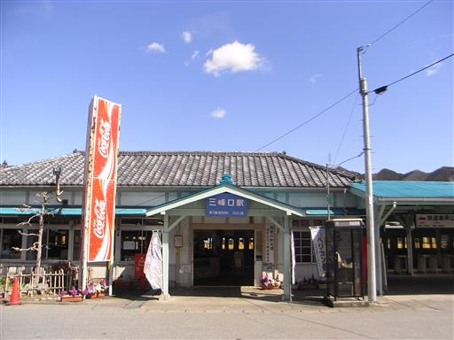
10:58 相原橋バス停到着。標高645m。
これから山登りを始めようというのに、時刻はもう昼に近い。
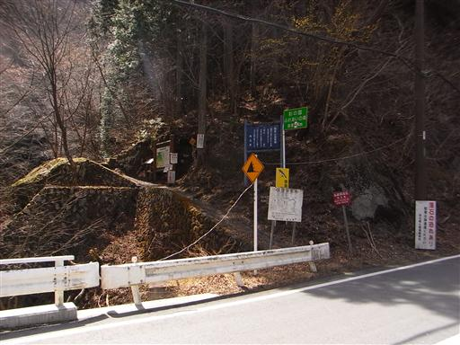
この辺りは野鳥の森歩道が整備(?)されている。
こんなところを歩く人など少ないと思うが…
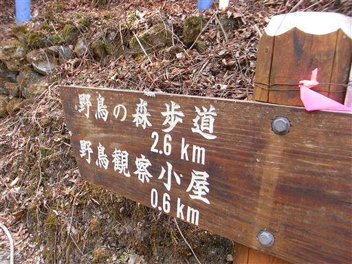
道幅は広くはないが、一応手すりなどがつけられている。
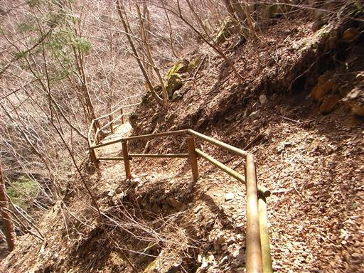
しばらく歩くと東屋が見えてくる。
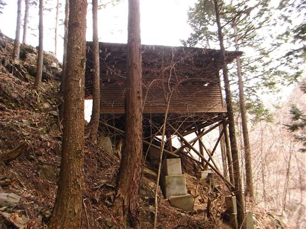
「この先危険なため通行止」と書かれてロープが張られている。
これは事前にネットで調べたときの情報通りだ。
ガイドブックには、本書中最難関の山とは書かれているが、このルートを歩くことになっている。
本の情報が古いのかもしれないが、ネットでもここを歩いた人はいそうだったので、
歩けないことはなさそうだ。とりあえず進むことにする。
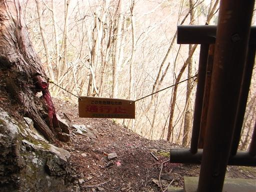
最初は植林地帯の中を登っていく。傾斜は急だが危険はない。
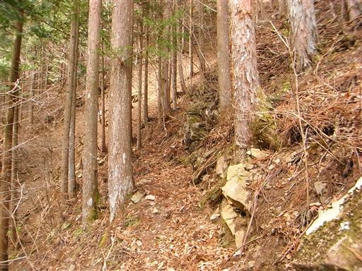
しばらく行くと倒木が道を塞いでいる。通行止の原因はこれだろうか？
道は狭く急傾斜なので、乗り越えるのに苦労した。
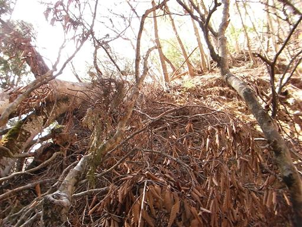
少し上には折れた大きな木が立っている。
道を塞いでいた倒木の根元のようだ。
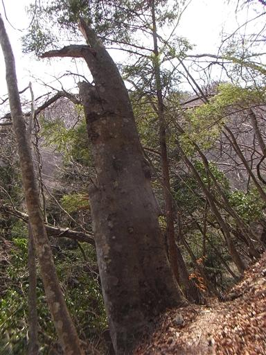
複雑に絡み合った木。
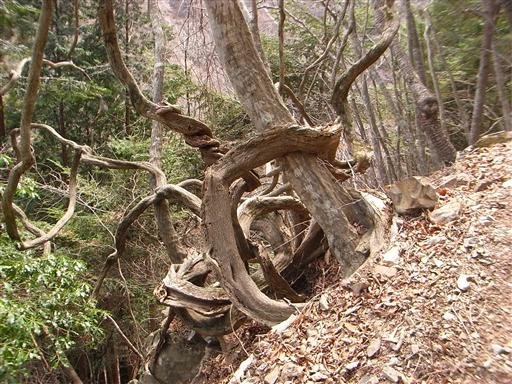
尾根の上に出てくる。これまでも、ここからも、比較的明瞭に踏み跡が見える。
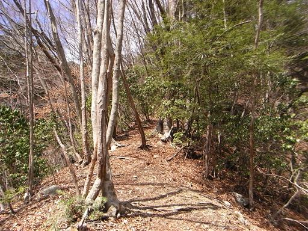
野鳥の森歩道終点の標識がある。
たとえ倒木がなくてもかなり急傾斜の道なので、野鳥観察どころではないだろう。
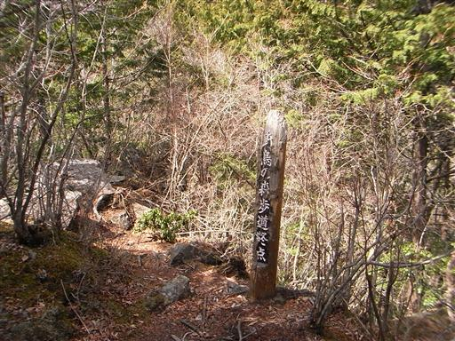
ここからは秩父槍ヶ岳の岩峰が目の前に見える。
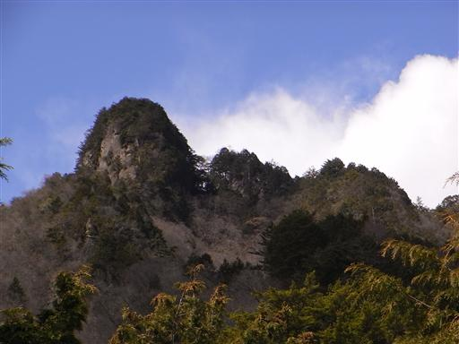
斜面に少しだけ雪が残っている。今回の山行で一番気になったのが雪だ。
ただでさえ難しい山なので、山頂付近に雪が残っていたら登頂は困難だ。
この辺りで単独行者と出会う。
平日にこんなマイナーな山の通行禁止の道で人に出会うとは思わなかった。
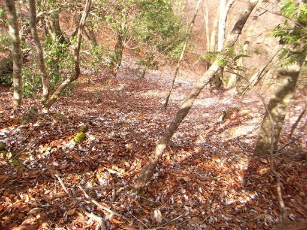
振り返ると秩父の奥深い山々がわずかながら見える。
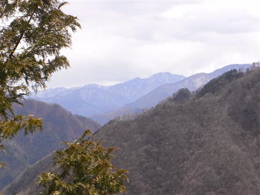
山頂の岩峰直下は巨木がたくさん見られる。
とにかく傾斜が急なので木の幹につかまりながら登っていく。
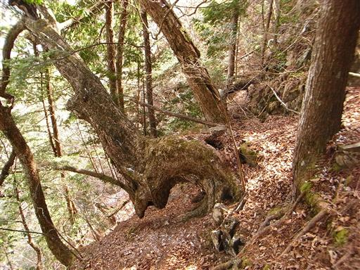
大きなツララができている。もう3月末なのに、夜は氷点下になるのだろうか？
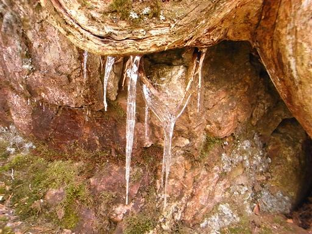
岩山なので狭い尾根上にたくさんの岩が出てくる。
直接岩を登るところはほとんどなく、右に左に避けてルートを延ばしていく。
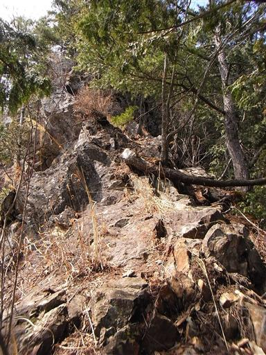
一箇所だけ岩を直接登る箇所がある。
固定ロープが張られているが、通行止のルートの固定ロープを使う気にはなれない。
簡単な岩場なのでロープを使わなくても特に苦労なく登れる。
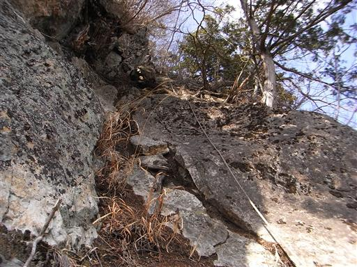
12:28 秩父槍ヶ岳山頂到着。標高1341m。
岩山なのに山頂は樹木に覆われ展望はない。
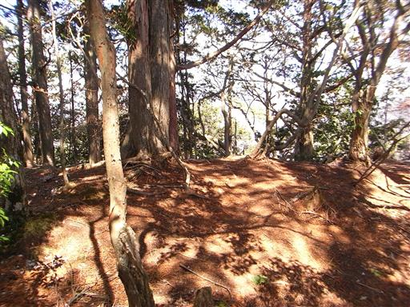
歩いてきたほうを振り返ると、ここにも通行止の札がかかっている。
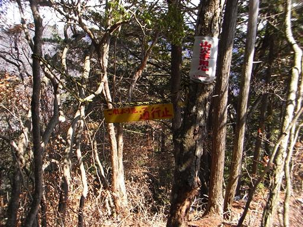
山頂にはKUMOと書かれた布が巻きつけられている。
マイナーな山にKUMOと書かれた私製の山頂標識がよくあるのは有名な話だが、
これもKUMOがつけたものなのだろうか？
いずれにせよ、山でKUMOの文字を見たのはこれが初めてだ。
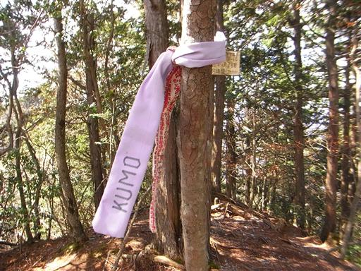
山頂からしばらく稜線を歩く。この辺りは少しだけ雪が残っている。
雪の量は少しでも坂が急なので滑って歩きにくい。
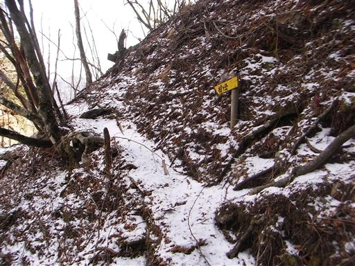
アンテナが建っている場所に出てくる。
ガイドブックによるとここは展望が良いらしいが、あまり展望は開けていない。
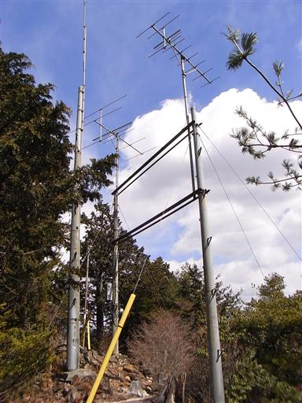
遠くの方にどっしりとした和名倉山が見える。
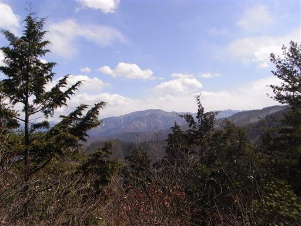
しばらく歩くと、再び秩父槍ヶ岳の山頂標識が出てくる。
上部にコンサイスと書かれているので、コンサイス山名辞典に出てくる秩父槍ヶ岳のピークは
おそらくこの場所を指しているのだろう。
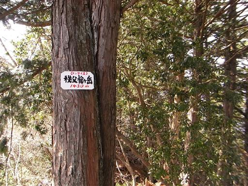
登りに使った道に比べればましだが、岩峰ゆえにそれなりに厳しい道が続く。
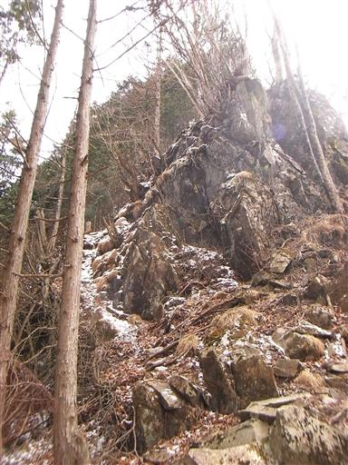
稜線から下山道に入っていく場所に到着する。
ここから先の尾根は登山道がないが、見た感じでは普通に歩けそうだ。
バスの時間まではだいぶあるので、少し寄り道して足を延ばしてみることにする。
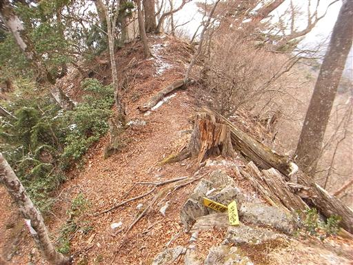
道は次第に穏やかになる。藪はなく非常に歩きやすい。
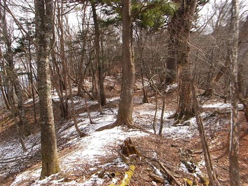
シャクナゲの藪が広がっているところは、刈払いが行われている。
登山道ではなくても、ここを歩く人は少なからずいるようだ。
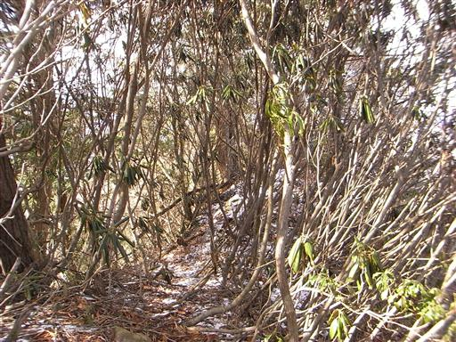
所々で視界が広がる。両神山方面の山が良く見える。
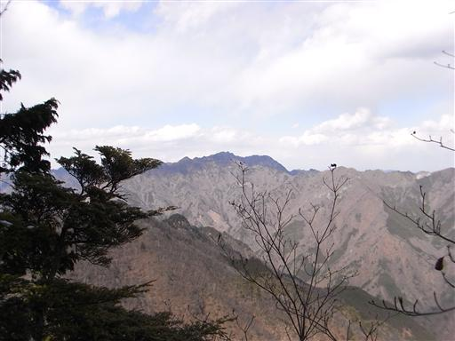
1560m三角点峰に到着する。
名がなく、登山道もないピークを踏むのは初めてだ。
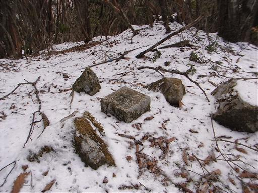
稜線下降点まで戻ってくる。往復1時間半ほどだった。
ここにも野鳥の森歩道終点の標識が立っている。
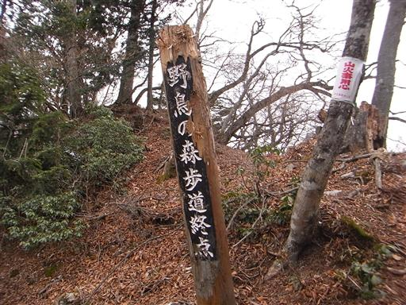
下山道はそのほとんどが植林地帯だ。
よくこんな場所を野鳥の森歩道に指定したものだ。
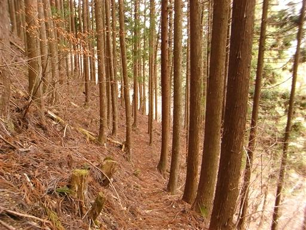
途中、斜面が大きく崩壊している場所がある。
植林は根が浅いため土砂崩れを起こしやすい。
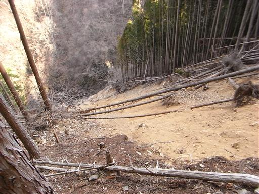
16:31 相原橋バス停到着。
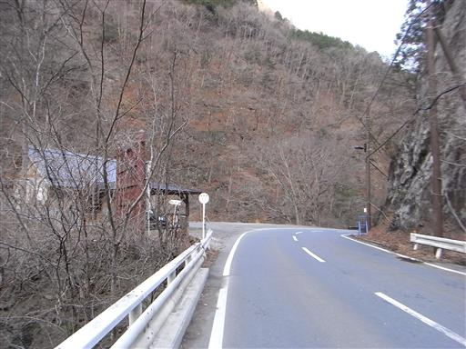